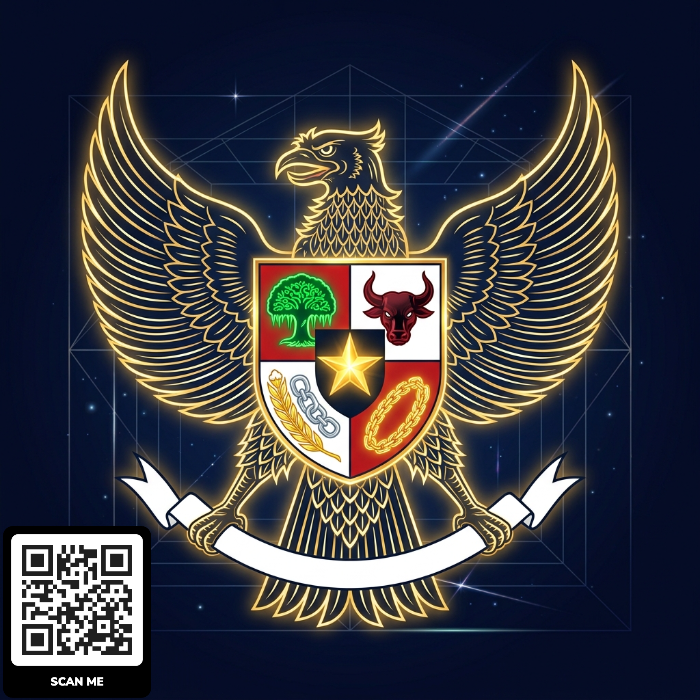
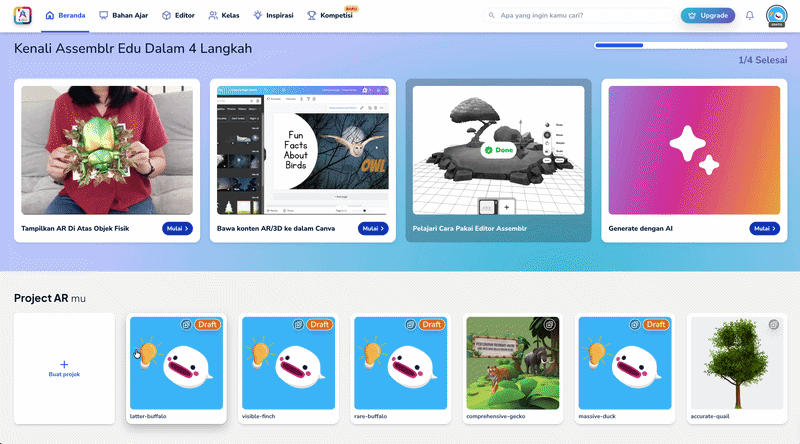
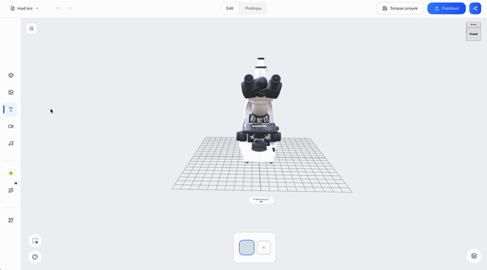
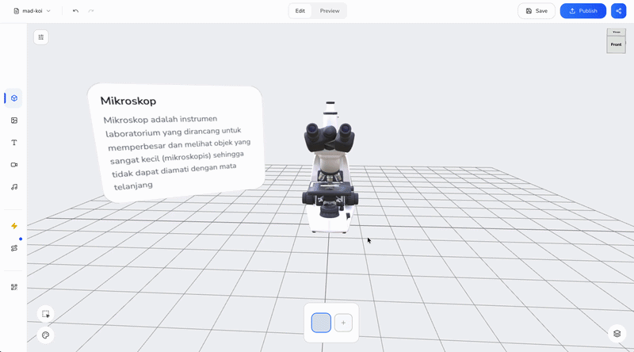
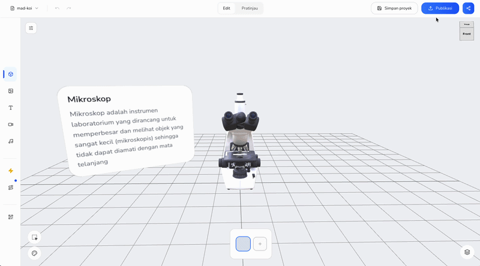
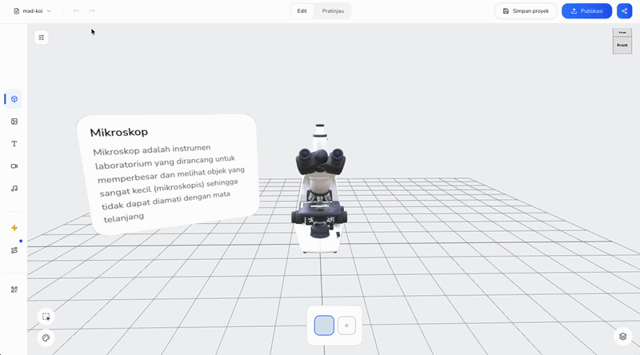
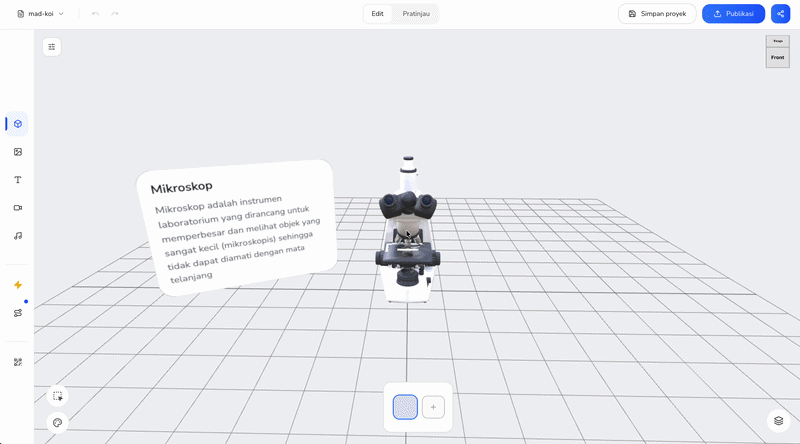

Pembuatan
Augmented Reality
Bertema Kebangsaan
Menumbuhkan cinta tanah air melalui teknologi Realitas
Tertambah.
Modul lengkap menggunakan
Assemblr EDU — Jenjang SD s.d. SMA.
Pendahuluan
🎯 Latar Belakang
PPKn sering dianggap hafalan & kurang menarik. Teknologi Augmented Reality hadir sebagai jembatan — menghadirkan materi secara visual, interaktif, dan kontekstual. Peserta didik bisa "melihat langsung" Garuda Pancasila, peta NKRI, dan pahlawan nasional dalam 3D.
📌 Tujuan Pelatihan
- Memahami prasyarat perangkat & akun
- Mengoperasikan Assemblr EDU (mobile & web)
- Merancang konsep AR bertema kebangsaan/PPKn
- Membuat proyek AR dari nol hingga siap presentasi
- Mengevaluasi & mengembangkan proyek lanjutan
7 Modul Bertahap
Pendahuluan
Latar belakang, tujuan, sasaran peserta
Prasyarat
Perangkat keras/lunak, akun, aset kebangsaan
Pengenalan Assemblr EDU
Antarmuka, AR Library, AR Creator, mode tampilan
Konsep AR Kebangsaan
Pemilihan tema, ide proyek, alur interaksi
Praktik Membuat Proyek AR
Langkah demi langkah pembuatan proyek
Uji Coba & Evaluasi
Presentasi, rubrik penilaian, refleksi
Pengembangan & Penutup
Proyek berseri, LKS QR, kolaborasi guru
Prasyarat & Checklist
Klik untuk menandai item yang sudah terpenuhi.
📱 Perangkat & Akun
- Smartphone Android 8+ / iOS 13+, RAM 3GB+
- Kamera belakang berfungsi baik
- Min. 1GB ruang kosong
- Internet stabil min. 5 Mbps
- Aplikasi Assemblr EDU terinstal
- Akun email terdaftar & terverifikasi
Pengenalan Assemblr EDU
🧩 Dua Komponen Utama
AR Library — Aplikasi mobile untuk menampilkan & menjelajah objek 3D/AR siap pakai.
AR Creator / Studio — Merancang proyek AR sendiri melalui antarmuka drag-and-drop.
🖥️ Area Kerja Editor
- Kanvas 3D — Letakkan, geser, putar, skala objek
- Panel Objek/Aset — Cari & tambah objek 3D, teks, gambar, audio
- Panel Properti — Atur posisi, ukuran, animasi, interaksi
🗂️ Navigasi Antarmuka
- Beranda — Proyek yang sedang dikerjakan & rekomendasi
- Discover — Jelajahi objek 3D & proyek AR publik
- Create — Mulai proyek baru
- Library Saya — Objek yang disimpan
- Profil — Kelola akun & pengaturan
📷 Mode Tampilan AR
Markerless — Objek AR muncul via deteksi permukaan kamera (meja/lantai).
Marker-based — Objek muncul saat kamera mengarah ke gambar/kartu tertentu.
Makna Tiap Sila

⭐ Ketuhanan Yang Maha Esa
Bintang emas — percaya & bertakwa kepada Tuhan sesuai agama masing-masing.
⛓ Kemanusiaan yang Adil dan Beradab
Rantai emas — menghargai harkat manusia, menjunjung kemanusiaan.
🌳 Persatuan Indonesia
Pohon beringin — mengutamakan persatuan di atas kepentingan pribadi.
🐃 Kerakyatan yang Dipimpin Hikmat
Kepala banteng — musyawarah untuk kepentingan bersama.
🌾 Keadilan Sosial bagi Seluruh Rakyat
Padi & kapas — mewujudkan keadilan dan kesejahteraan tanpa terkecuali.
5 Ide Proyek AR PPKn
Garuda Pancasila Interaktif
Model 3D Garuda, teks makna sila saat perisai disentuh
Peta NKRI 3D
Peta timbul 3D, penanda pulau, ikon budaya daerah
Galeri Pahlawan
Figur pahlawan, biografi singkat, audio narasi
Upacara Bendera Virtual
Animasi tiang bendera, simulasi urutan upacara
Rumah Adat Nusantara
Model rumah adat tiap pulau, keterangan daerah
Praktik Membuat Proyek AR

Buat Proyek Baru
- Buka aplikasi atau web Assemblr EDU dan Login dengan akun Anda.
- Di halaman utama (Beranda/Home), tekan tombol Create (+).
- Pilih New Project untuk memulai kanvas kosong.
- Pada pilihan jenis mode, pilih Default Editor untuk proyeksi AR pada permukaan datar.
- Pilih Versi Editor Baru
Praktik Membuat Proyek AR

Tambahkan Objek 3D
- Buka panel AR Library pada editor.
- Ketik kata kunci (misal: "Garuda" atau "Pancasila") di kolom pencarian.
- Pilih objek 3D yang sesuai, lalu tarik (drag) ke tengah kanvas.
- Gunakan panel properti untuk mengatur Skala dan Posisi objek.
Praktik Membuat Proyek AR

Elemen Interaktif
- Tambahkan elemen Teks untuk menuliskan materi/makna.
- Pilih objek 3D utama, buka tab Interactivity.
- Pilih tipe interaksi Tap to Show/Hide.
- Targetkan interaksi tersebut ke elemen Teks yang baru dibuat.
Praktik Membuat Proyek AR

Animasi & Urutan
- Buka panel Animation untuk memberikan efek transisi.
- Gunakan efek seperti Fade In atau Scale Up saat objek muncul.
- Atur Sequence (urutan waktu) jika terdapat banyak elemen.
- Tekan tombol Preview untuk melihat hasil sementara.
Praktik Membuat Proyek AR

Simpan & Publish
- Pastikan semua objek dan interaktivitas sudah berjalan dengan baik.
- Tekan tombol Save di pojok layar untuk menyimpan draf.
- Jika sudah siap, pilih opsi Publish.
- Berikan nama proyek, deskripsi, lalu konfirmasi publikasi.
Praktik Membuat Proyek AR

Uji Coba (My Library)
- Kembali ke menu awal dan buka tab My Library.
- Temukan proyek yang baru saja Anda publish.
- Pilih opsi View in AR (Lihat dalam AR).
- Arahkan kamera ke permukaan datar yang terang (meja/lantai), lalu ketuk layar untuk memunculkan AR.
Praktik Membuat Proyek AR

Berbagi via QR
- Pada halaman detail proyek, ketuk tombol Share.
- Gunakan fitur Generate QR Code.
- Unduh atau tampilkan QR Code tersebut di layar/proyektor kelas.
- Peserta didik dapat langsung memindainya via aplikasi ponsel mereka.
Praktik Membuat Proyek AR
Integrasi ke Canva
- Pada tombol Share, pilih opsi salin tautan (Copy Link) Web Player.
- Buka presentasi atau desain Anda di aplikasi Canva.
- Gunakan fitur Embed (Sematkan) di panel sisi kiri Canva.
- Tempel tautan (paste link) Assemblr tadi agar 3D player langsung muncul di dalam desain Canva Anda.
Rubrik Penilaian Proyek AR
| Aspek | Indikator | Skor (1–4) |
|---|---|---|
| Kesesuaian Materi | Objek AR relevan dengan capaian PPKn |
★
★
★
★
|
| Interaktivitas | Interaksi sentuh/animasi/audio berfungsi |
★
★
★
★
|
| Kejelasan Pesan | Nilai kebangsaan jelas & mudah dipahami |
★
★
★
★
|
| Kerapian Tampilan | Tata letak proporsional, tidak tumpang tindih |
★
★
★
★
|
Pertanyaan Refleksi
💭 Refleksi Setelah Praktik
- Bagian mana dari proses pembuatan yang paling menantang?
- Apakah proyek AR ini dapat langsung diterapkan pada rencana pembelajaran di kelas?
- Penyesuaian apa yang diperlukan agar proyek lebih efektif digunakan peserta didik?
Pengembangan Lanjutan
Proyek AR Berseri
Rangkaian proyek sesuai tema bulanan: Kemerdekaan, Sumpah Pemuda, Hari Pahlawan.
LKS Berbasis QR Code
Integrasikan proyek AR ke Lembar Kerja Siswa dengan kode QR yang bisa dipindai.
Kolaborasi Antar-Guru
Bekerja sama dengan guru seni/budaya untuk memperkaya model 3D dan konten.
Komunitas Berbagi
Bentuk komunitas berbagi proyek AR PPKn via Discover di Assemblr EDU.
Terima Kasih
Modul Pelatihan Pembuatan Augmented Reality
Bertema Jiwa Kebangsaan & PPKn
Menggunakan
Assemblr EDU
Jenjang SD – SMA • Untuk Guru, Fasilitator, dan Peserta Pelatihan